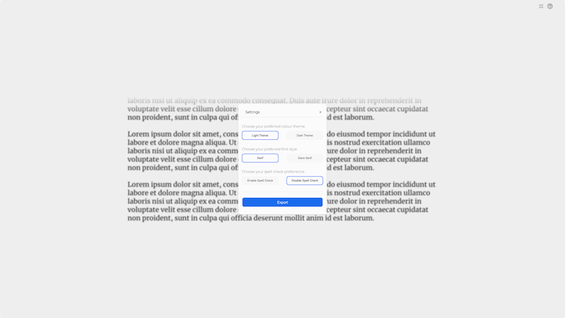

JURNL is tool designed to avoid distraction and encourage stream of consciousness writing. 
It is a clean, minimalist and aesthetic writer which allows the user to choose either a Serif or Sans-Serif font, a Light or Dark theme and gives ability to enable or disable spell check. Additionally, the user is able to export any writing as a .txt file.